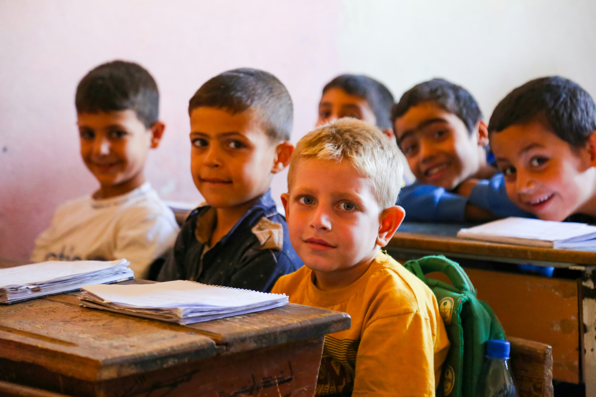

Projeto Criança Feliz
Focamos em reforço escolar e atividades para crianças de 6 a 12 anos em áreas de vulnerabilidade social. Oferecemos oficinas de arte, música e esporte.
Focamos em reforço escolar e atividades para crianças de 6 a 12 anos em áreas de vulnerabilidade social. Oferecemos oficinas de arte, música e esporte.
Distribuição de alimentos para pessoas em situação de rua. Este projeto conta com uma vasta rede de voluntários na cozinha e na logística de entrega.
O voluntariado é a alma da nossa organização. Se você tem tempo disponível e quer fazer a diferença, temos várias frentes de atuação:
Para se candidatar, preencha nosso formulário de cadastro!